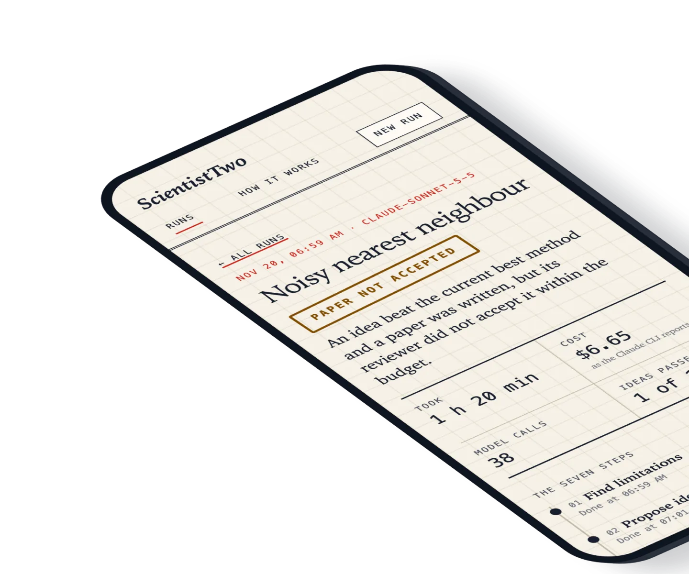
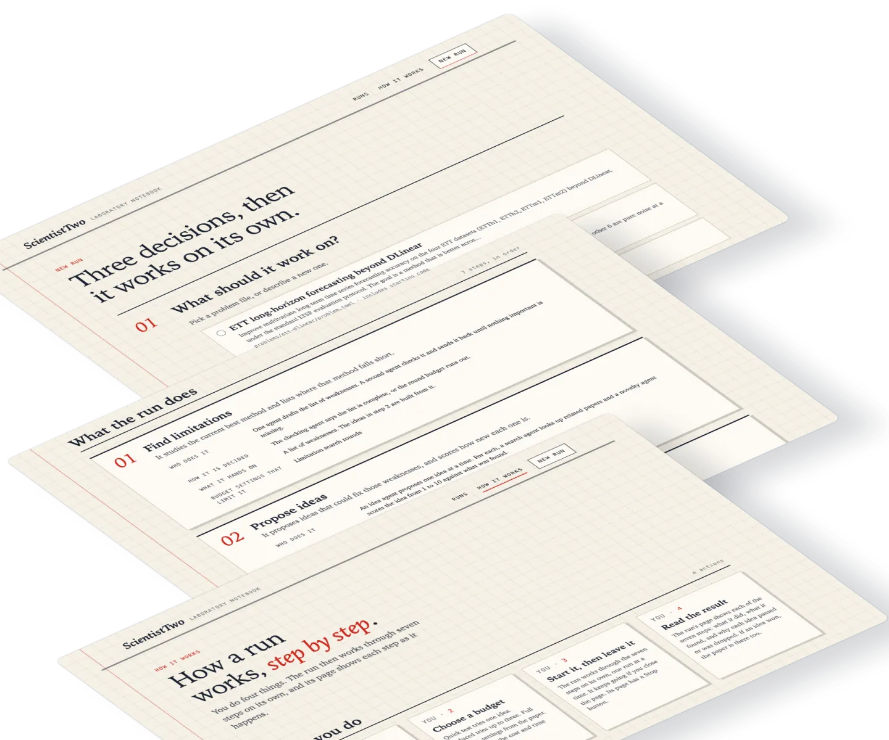
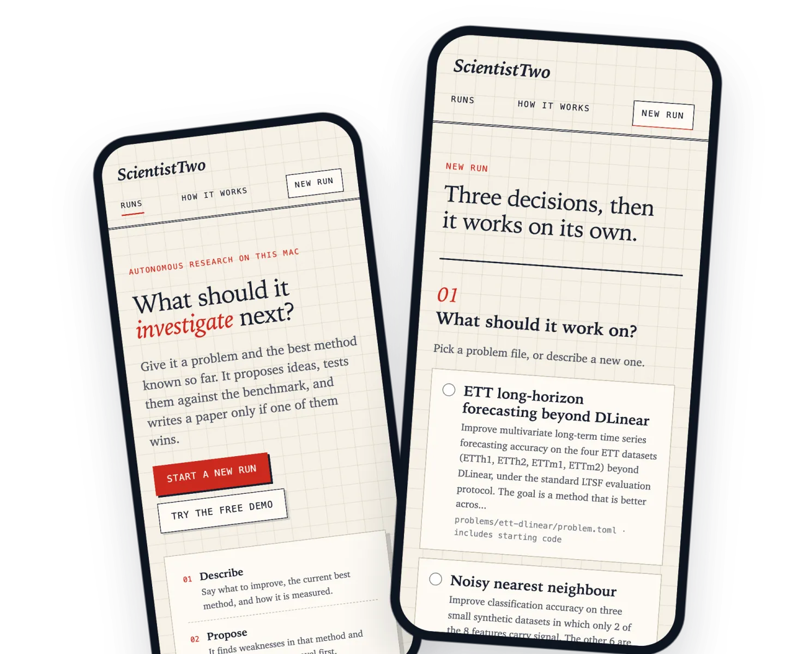
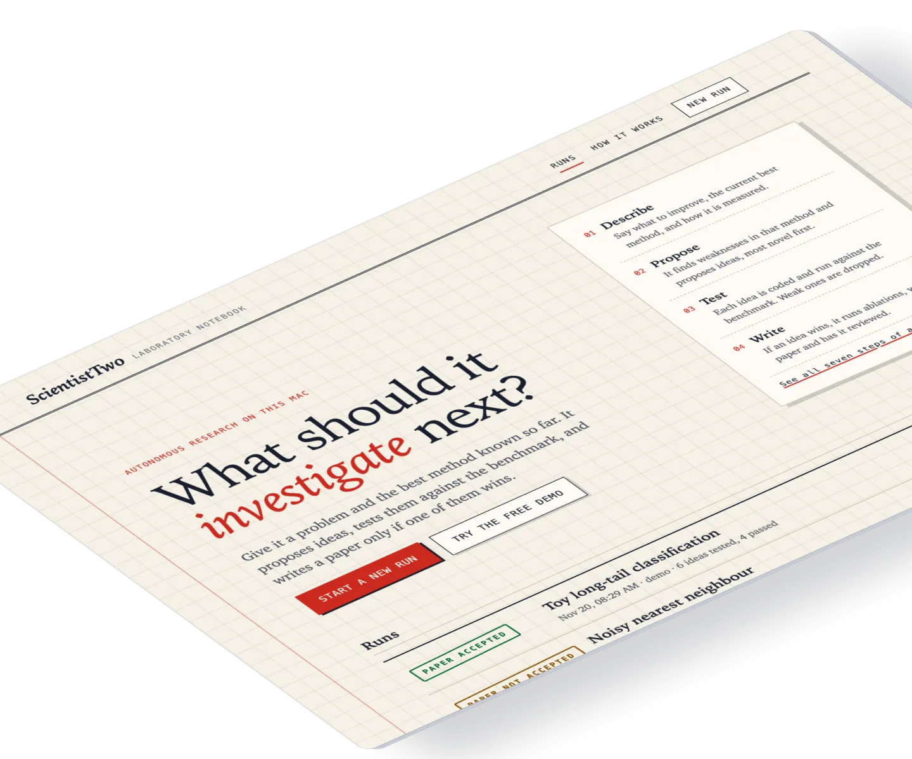
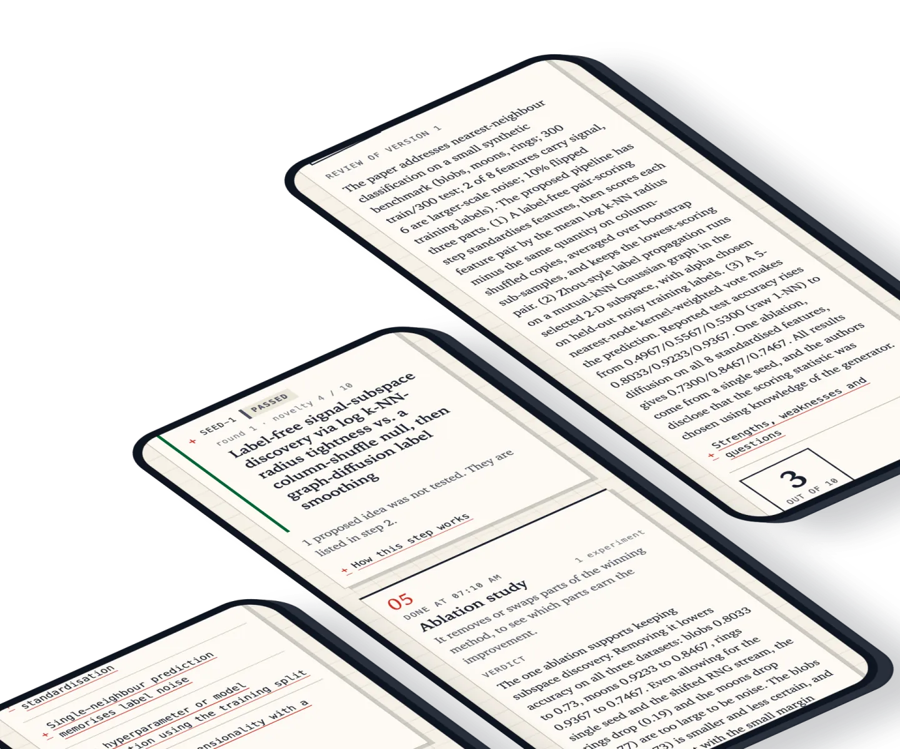
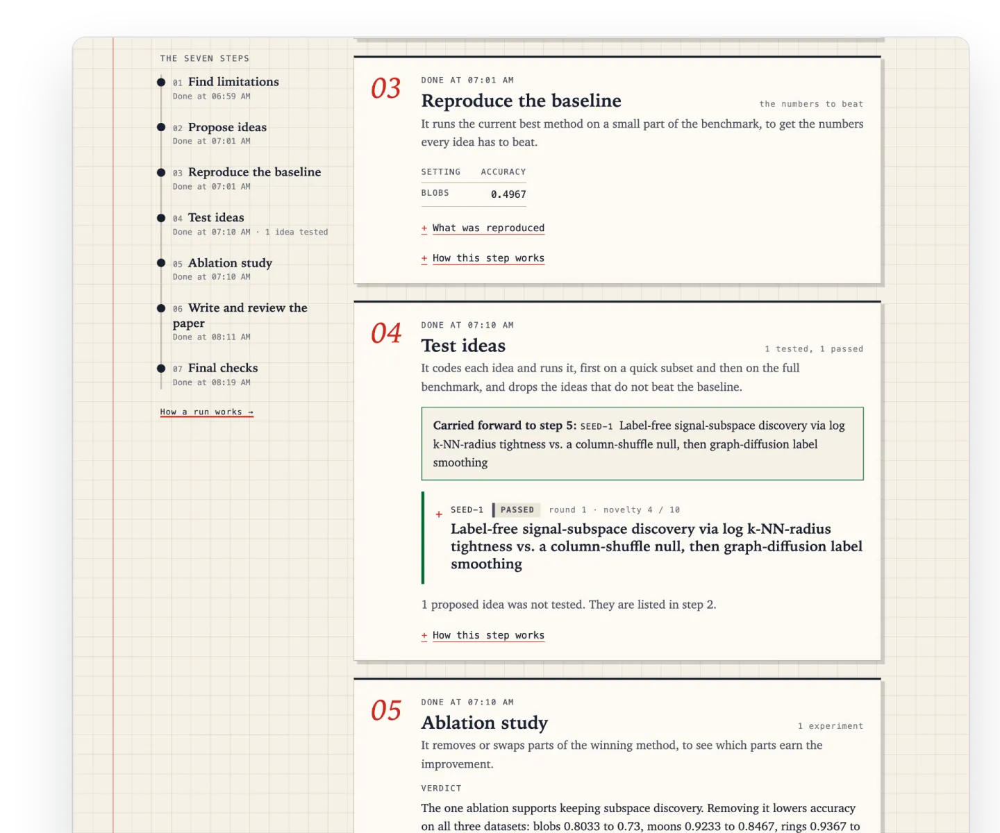

Run page

A finished run: its outcome, time and cost on top, then the seven steps.
1 h 20 min · $6.65 · 38 model calls

Six real captures of the local interface, taken on 20 November 2026.
A finished run: its outcome, time and cost on top, then the seven steps.
1 h 20 min · $6.65 · 38 model calls

The guide: what you do, and what the run does at each step.

Three decisions, then it works on its own.

Start a run, try the free demo, or open an earlier run.

The same run on a narrow screen, one step card under the next.

Each step says what it does, when it finished and what it produced.
